1. La lune dans la galaxie
Séléné est le satellite d’Asteria en [1:1:8]. Le nom de la lune permet de l’ouvrir, et les actions de la ligne donnent accès au ravitaillement et au stationnement.
La lune dans la galaxie
Séléné apparaît à côté d’Asteria en [1:1:8]. Son nom ouvre la lune ; les actions permettent de la ravitailler ou d’y stationner une flotte.
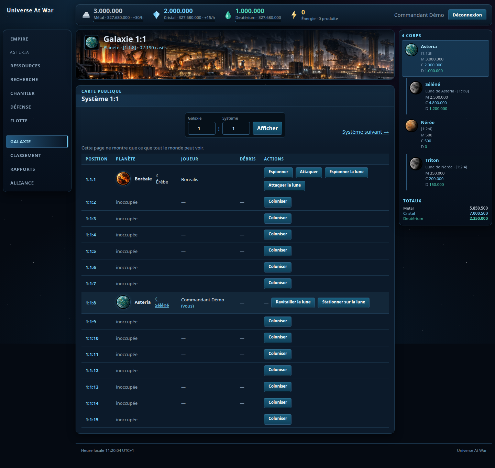
2. Les bâtiments lunaires
Les huit bâtiments et leurs illustrations sont visibles. La page indique la planète mère, les cases utilisées et les ressources indépendantes de la lune.
Les huit bâtiments de Séléné
La base lunaire, la phalange et la porte de saut figurent en tête. Robots, chantier et hangars complètent la page ; les stocks sont propres à la lune.
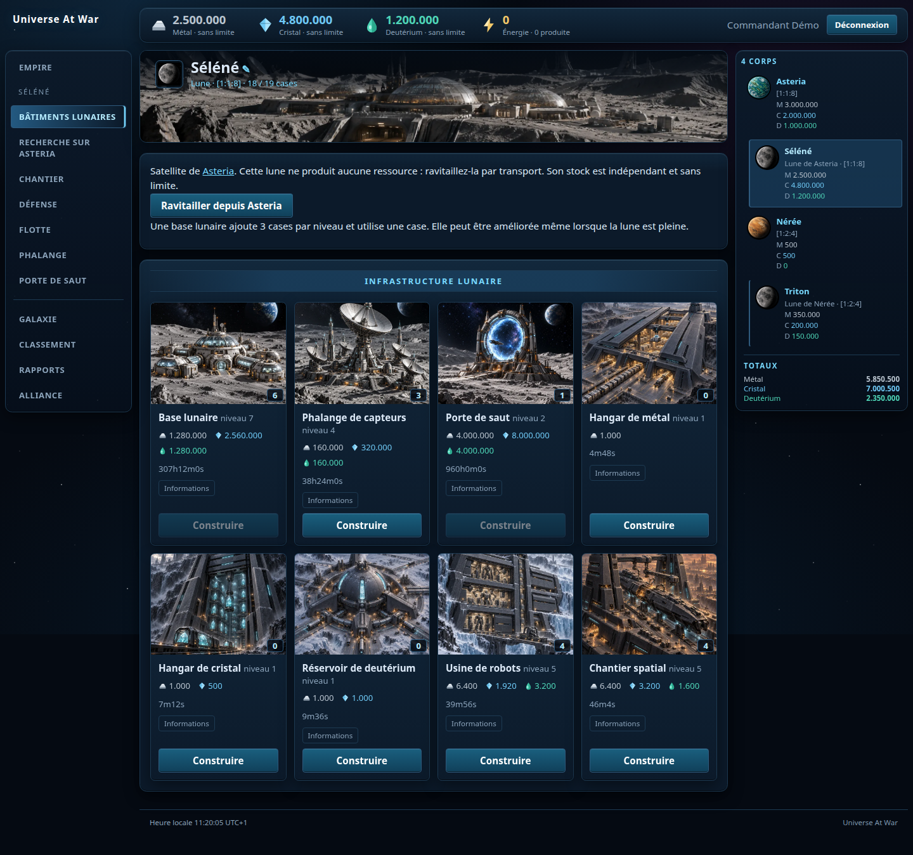
3. Déplacer des vaisseaux vers la lune
Choisir Lune comme corps céleste et Stationner comme mission, puis calculer et lancer la flotte. Cette mission laisse les vaisseaux sur place. Transporter livre les ressources puis ramène les vaisseaux.
Choisir une lune et la mission Stationner
Depuis Asteria : sélectionner Lune, saisir [1:1:8], choisir Stationner et embarquer 12 chasseurs légers, 5 petits transporteurs et un ravitaillement. Transporter livre seulement le cargo puis ramène les vaisseaux.
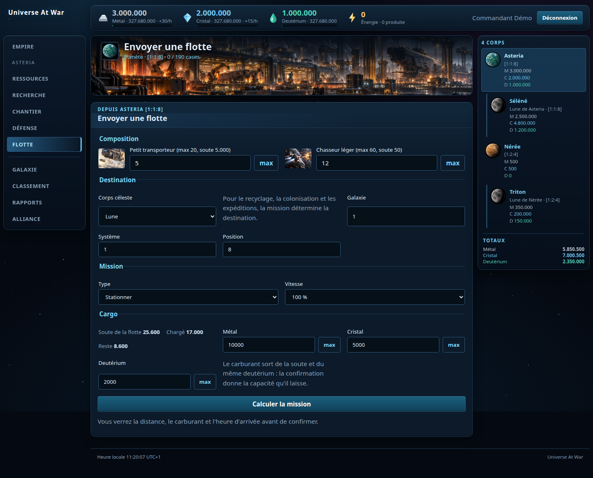
Voir les étapes et le résultat · 3 captures
Vérifier puis lancer la flotte
La confirmation indique explicitement la destination lune, le carburant, le chargement et l’arrivée. Cliquer sur Lancer la flotte pour confirmer.
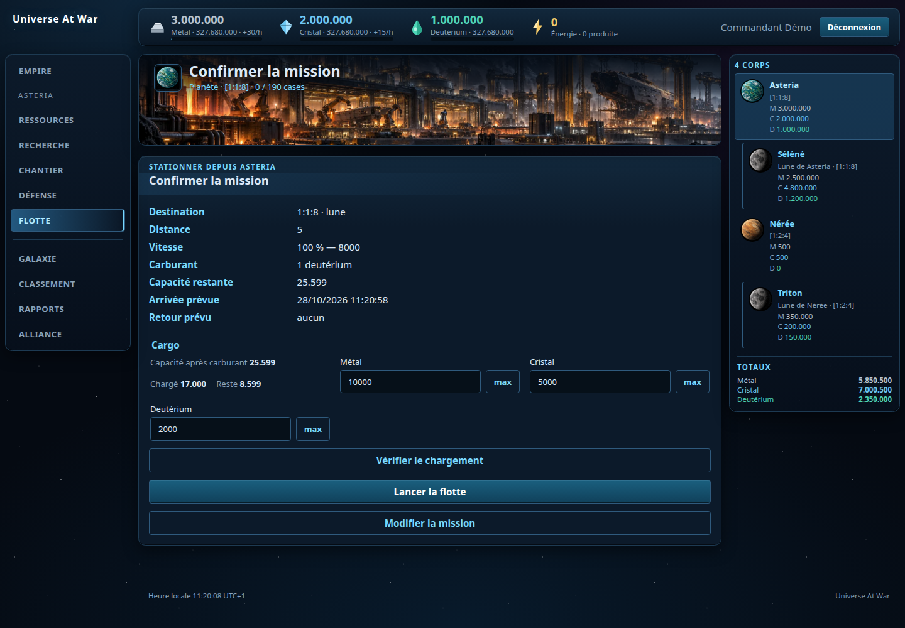
Le stationnement en cours
La mission part effectivement vers [1:1:8] (lune). Le trajet peut être rappelé avant l’arrivée.
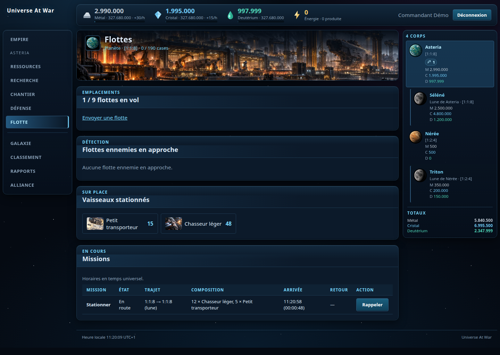
Les vaisseaux sont arrivés sur Séléné
La lune possède maintenant 20 chasseurs légers : les 8 déjà présents et les 12 transférés, ainsi que les 5 petits transporteurs. Le cargo rejoint ses stocks.
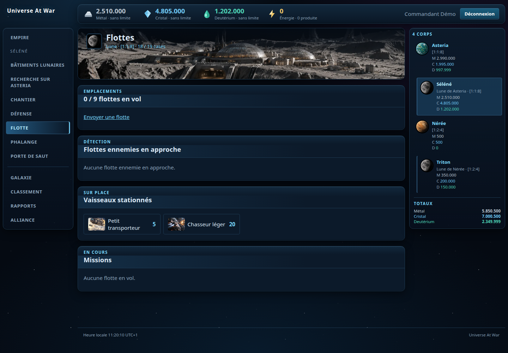
4. Utiliser la phalange
Depuis la lune, ouvrir Phalange, saisir les coordonnées de la planète à observer et cliquer sur Balayer. Le résultat ci-dessous montre un transport de quatre vaisseaux, sans sa composition ni son cargo.
Lire les missions détectées
La phalange détecte un transport de 4 vaisseaux vers Asteria. Elle affiche mission, coordonnées et horaires, sans révéler la composition ni le cargo. Le deutérium du balayage est débité.
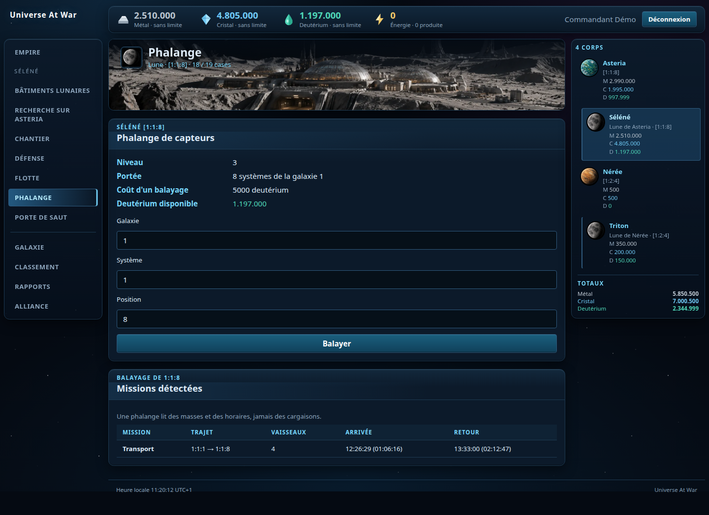
Voir les étapes et le résultat · 1 captures
Préparer un balayage de phalange
Choisir les coordonnées de la planète à observer et cliquer sur Balayer. Le niveau 3 indique une portée de 8 systèmes ; chaque balayage coûte 5 000 deutérium.
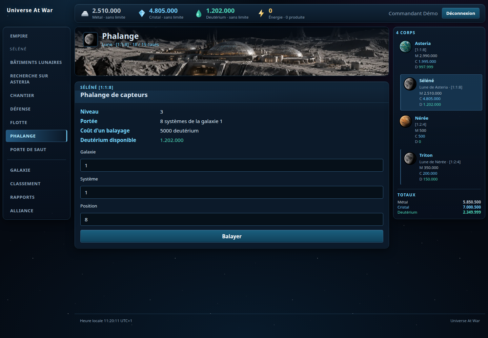
5. Utiliser la porte de saut
Les deux lunes doivent posséder une porte. Sélectionner la lune d’arrivée et les vaisseaux, puis cliquer sur Sauter. Le transfert est immédiat, les ressources restent sur place et les portes passent en recharge.
Choisir les vaisseaux et la lune d’arrivée
Sélectionner Triton [1:2:4], équipée elle aussi d’une porte. Ici : 10 chasseurs légers et 2 petits transporteurs. Cliquer sur Sauter ; aucune ressource n’est transportée.
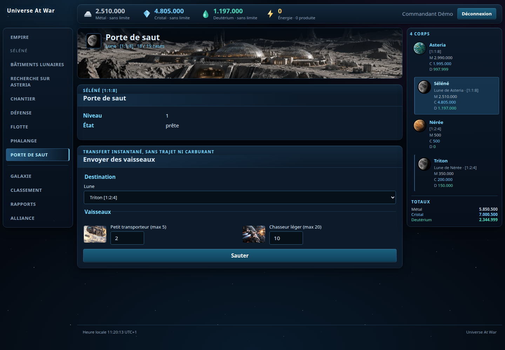
Voir les étapes et le résultat · 2 captures
Les deux portes sont en recharge
Le saut est immédiat. Les quantités restantes sur Séléné ont diminué ; la porte de départ et celle de Triton sont en recharge. Un second saut doit attendre.
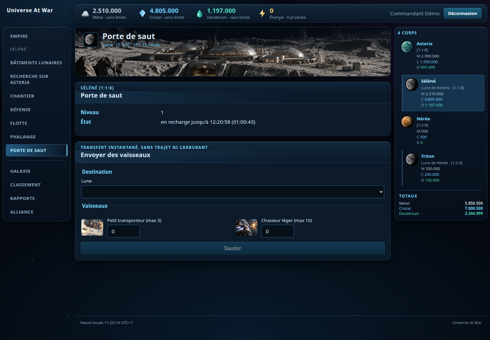
Vérifier l’arrivée instantanée sur Triton
Les 10 chasseurs légers et les 2 petits transporteurs sont déjà stationnés sur Triton, sans mission en vol et sans transfert de ressources.
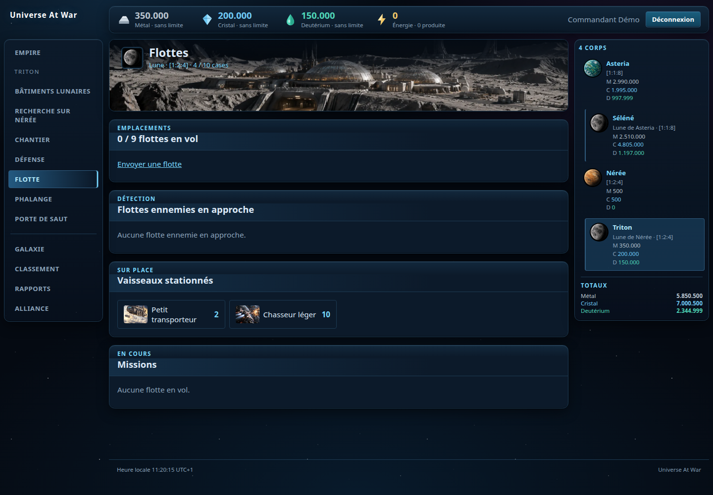